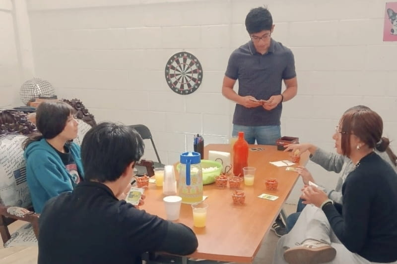

Hola amigos y familia, queremos comenzar esta actualización con gratitud. Damos gracias a Dios por Su fidelidad y por la oportunidad de compartirles un poco de lo que Él ha hecho en nuestras vidas durante los meses de marzo y abril.
Servir y confiar
Durante el mes de marzo tuvimos la oportunidad de apoyar en Querétaro como parte de una gira local, sirviendo en diferentes iglesias y ministerios a lo largo de la semana. Fue un tiempo muy especial en el que pudimos usar los dones que Dios nos ha dado y ser parte de lo que Él está haciendo en cada comunidad.
También queremos compartir con alegría que, durante este mes, el Señor proveyó para la compra de los boletos de regreso a El Salvador. Ya tenemos fecha de retorno, la cual estaremos compartiendo más adelante. Reconocemos esta provisión como un recordatorio de que Dios sigue guiando cada paso del camino.


"Den gracias en todo, porque esta es la voluntad de Dios para ustedes en Cristo Jesús." — 1 Tesalonicenses 5:18
Formación, servicio y despedidas
Desde finales de marzo y durante el mes de abril continuamos cursando las últimas materias del Instituto Bíblico. Ha sido un tiempo de mucho aprendizaje, no solo académico, sino también personal y espiritual. A través de nuestros maestros, el Señor sigue moldeando nuestro carácter y mostrando áreas en las que aún desea seguir trabajando en nosotros.
Al mismo tiempo, hemos continuado apoyando en las diferentes actividades de la iglesia local. Este proceso ha sido agridulce: por un lado, anhelamos regresar a El Salvador y comenzar esta nueva etapa; por otro, nuestro corazón se prepara para despedirse de una iglesia y de amigos que han sido parte importante de este tiempo en México.
Un anuncio importante
Con mucha alegría queremos compartir una noticia muy especial:
¡Oficialmente somos misioneros de Palabra de Vida El Salvador! Desde noviembre del año pasado iniciamos el proceso para formar parte del ministerio en nuestro país, y el 28 de abril fuimos aceptados oficialmente como parte del equipo que ya está sirviendo allá. Estamos profundamente agradecidos con Dios y muy emocionados de unirnos al trabajo que Él ya está realizando en El Salvador.
Caminar juntos en esta nueva etapa
Mientras nos preparamos para esta transición, recordamos con fuerza que la misión no se vive solos. Dios ha usado a muchas personas para sostenernos en oración, ánimo y apoyo práctico, y creemos que seguir caminando juntos será clave para servir con fidelidad en esta nueva etapa.
Si sientes en tu corazón acompañarnos de una manera más constante, el apoyo mensual es una forma concreta de caminar con nosotros en la misión, sosteniendo nuestra vida como familia misionera y permitiéndonos servir de tiempo completo.
Caminar juntos en la misiónGracias por tomarte el tiempo de leer y caminar con nosotros. Nos encantaría saber de ti; no dudes en escribirnos. Será un gusto orar por ti y tu familia.
Nuestra Agenda de Aventura Compartida
- Por provisión para la etapa de servicio en El Salvador.
- Por sabiduría en las decisiones que tenemos por delante.
- Por el viaje de UME Tamaulipas, para que el Señor cuide, provea y supla lo que aún falta.
- Por la salud y el cuidado de nuestras familias y de nosotros.
¡Continúa la aventura!
¿Quieres orar por nosotros o compartir algo?
Estamos aquí para escucharte. Escríbenos y cuéntanos cómo podemos orar por ti también.
Conecta con nosotros